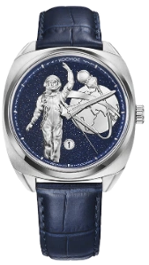
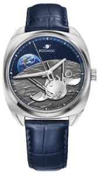

12 АПРЕЛЯ 1961
108МИНУТ
изменившие историю
ВОСТОК-1 ОРБИТА ЗЕМЛИ
ЛИСТАЙТЕ↓
01 / 04
09:07
СТАРТ
Байконур
02 / 04
ВЫХОД
ВЫХОД
НА ОРБИТУ
Восток-1
03 / 04
ОДИН ВИТОК
ОДИН ВИТОК
ВОКРУГ ЗЕМЛИ
Первый полёт человека в космос
04 / 04
ВОЗВРАЩЕНИЕ
Полёт длился 108 минут
12.04.1961 12.04.2026
КОСМОС


65 ЛЕТ СПУСТЯ
Лимитированная серия, посвящённая первому полёту человека в космос